RoyalRockTemple/Dambulla
さてさてすっかりアストロ球団化しつつあるスリランカ佛教最前線レポートも終盤戦ということで。
向かったのはセイロン島中央部。
千年から二千年前の仏教遺跡が数多く残る世界遺産大好きな方には堪えられない地域として有名だ。
その世界遺産密集地帯の中央に位置するダンブッラには見事なまでの大仏さんがある。
というわけで石窟寺院で有名なダンブッラに向かった。
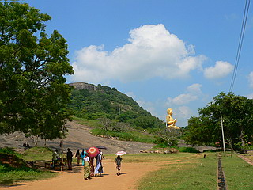
ハイ、見えてきましたね。
世界遺産にふさわしい、素晴らしいゴールデン大仏である。
あ、言わないでもおわかりかと思いますが、この大仏は世界遺産じゃないよ。
世界遺産になっているのは大仏の後の山中にある石窟寺院の方ですから。
くれぐれも明日会社とか学校とかご近所とかで「スリランカに世界遺産の金ぴかの大仏があってさ〜」などと口走らないように。
運が悪いとアナタの所属する社会から抹殺されるかもしれないし、運が良いと緒方直人やオダギリジョーや中村勘太郎なんかに「んなわけねーだろっ！」と詰め寄って来られるかも。
で、世界遺産の前座の大仏さんである。
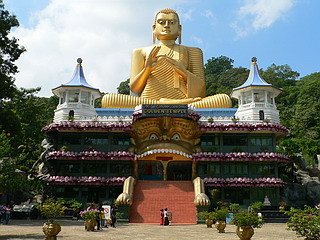
個人的にはこんな面白いたたずまいなんだからそれだけで世界遺産に認定しちゃってもイイんじゃない、とか思うのだが、そうなると緒方直人やオダギリジョーがやってきそうなので、ｍｙ世界遺産ということで私の心の中だけでひっそりと認定させていただきます。
どうしても目がいってしまうのは台座の部分。
何なんでしょう。この怪物みたいなの。獅子なのか？
口をエントランスにしてしまったことでかなりお間抜けな感じに仕上がっている。
しかも台座のテラスの部分は蓮の花びらになってるし、階段の手すりは手になってるし。
この入口の怪物さえなければ、ごくごく普通の大仏さんだったのに、取り返しのつかないことになってしまっている。
台座で台無し。
そんな手作りケーキのトッピングに胡椒をどっぷりかけてしまったような蛇足っぷりを最大限に評価したいものです…
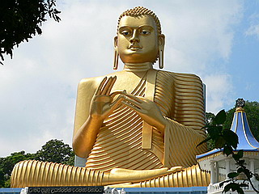 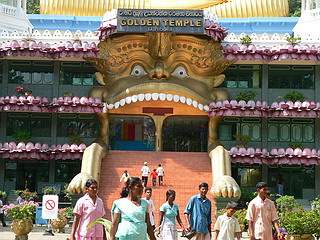
台座の建物は３階建て。
一応、この建物はゴールデンテンプルというそうな。
とはいえ内部は仏教関連の博物館があるだけで仏教寺院としての設備は見なかったような気が…
そのわりには何故かネットカフェとかも入っていたりして。
どっちかというと門前の小さいヒンズー教寺院の方が参拝者は多かったです。
早速中に入ってみる。昔のギャグマンガに出てきそうな怪獣の口の中へと入っていく。
おっ、歯並びイイですね。
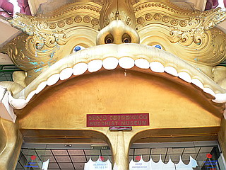
博物館は（たぶん）石窟寺院の壁画やこの地方のダンスの様子を再現したモノが展示されている。
この類の壁画はスリランカではよく見られる。
赤と黄で彩られた絵には独特な濃い雰囲気があり、見ているだけでカレーが食べたくなってくる。
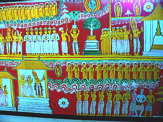 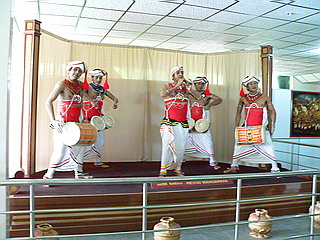
結局、展示物の９割以上がパネルやレプリカ展示だった。
…ハッキリ言ってコレで金取るか、という施設だったが、どこかの土産屋で買ったようなプラの仏像とかが仰々しくガラスケースに収まっていたり、世界の仏教国一覧に台湾やモンゴルやシンガポールの表記がなかったり、逆にインドがエントリーされていたりする様は結構興味深かったです。
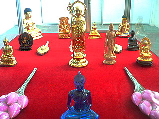 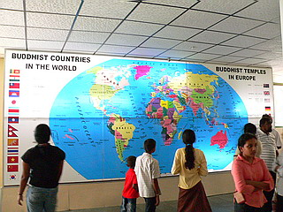
でも一番素敵だったのは出口にあったこのコラージュ。大仏3カメ撮り。
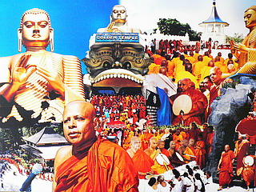
博物館を出て右手に階段がある。
手前のハリボテ岩に囲まれた階段を上れば大仏さんのお膝元、つまり博物館の屋上に、奥の階段を上れば石窟寺院に行く。
とりあえず石窟寺院に向かう。
大好物は最後にとっておくタイプなもんで。
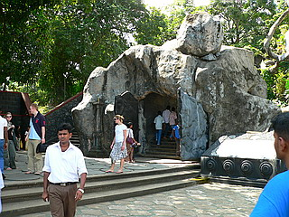
大勢の人たちが石窟寺院を目指して山道を登っていく。
大仏さんの背後は意外とシンプルな処理でした。
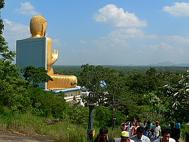
大仏さんを真横から見ると衣のヒダヒダの間に鳥がとまっている。
ヒダヒダ様式のスリランカ大仏ならでは、の光景である。
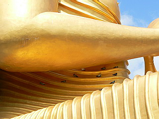
途中、物売りや物乞いのアタックをかわしつつ石窟寺院に到着する。
振り返れば大仏さんの頭越しに下界が。
そのかなたにはこれまた世界遺産でもあるシギーリャロックも見える。
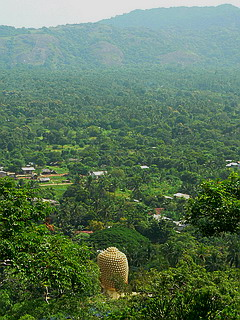
この岩の下が石窟寺院である。
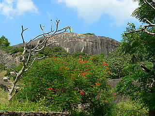
石窟寺院の外観はこんなです。
洞窟というより巨大な岩の下の部分が浸食されてえぐられた岩陰に仏像を安置した、という感じ。
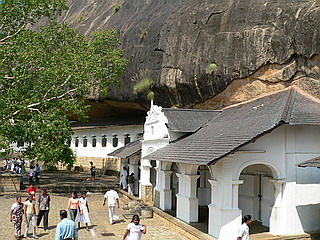 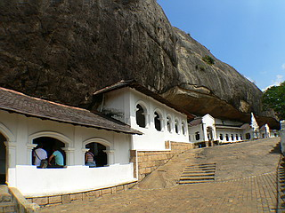
その岩陰を覆うように建物が建っている。
西洋風の建物なところを見ると、覆屋自体は植民地時代に造られたのだろうか。
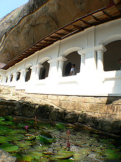
石窟は5つのパートに分かれていて、それぞれに仏像が安置されている。
一番好きだったのはこの寝釈迦さん。足の裏も良い感じです。
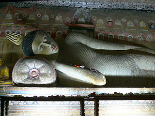 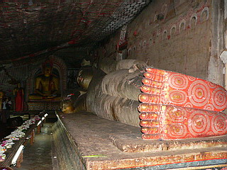
こんな感じで黄色っぽい仏像が並んでいる。
浅い石窟なので入口から全体が見渡せる感じで、私が洞窟寺院に期待する奥行き感というか外界との隔絶感のようなものはあまりなかった。
しかし特筆すべきはその壁である。
石窟の壁という壁、天井という天井にびっしり仏画や紋様などが描き込まれているのだ。
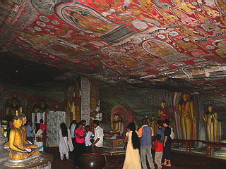
天然の石窟だけに壁や天井は凹凸があったり歪んでいたりするが、そんなのお構いなしに幾何学的な紋様や仏画がガンガン描かれている。
ガタガタの下地に無理矢理クロス張りをしたような妙なグルーヴ感に満ち溢れていて面白かった。
この寺院ももちろん土足厳禁、基本裸足なのだが、フランス人のツアーの団体さん達は靴下にビニール袋を被せてました。
靴下にビニール袋なら裸足の方が絶対快適だと思うのだが、あくまでも風呂とベッド以外では裸足にはならないぜ、という意地を感じました。
山上の寺院だけに眺めはイイ。
若いお坊さんが娘さんとにこやかに談笑してました。
お坊さんなのにデート？若いねえ〜。
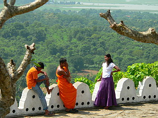
再び大仏さんのエリアに戻り、今度はハリボテの岩に囲まれた階段を上る。
そこは先ほどの博物館の屋上に至る階段である。
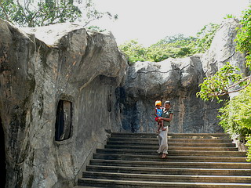
どうでもいいけどこの階段付近、凄く生臭かったです…
さて、屋上に上がればそこは大仏さんのお膝元。
ぐぐっと大仏さんに迫ることが出来る。
とはいえ胎内に入ったり後ろに建物が建ってたり、ましてや頭の中を覗けたりするわけではないので、この辺が最短距離。
大仏さんの前にはたくさんの花が供えられていた。
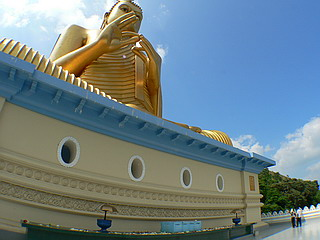 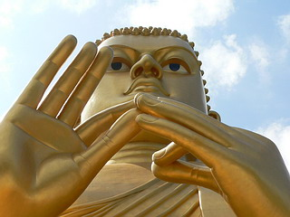
ここの大仏さんもかなり男っぽい顔立ちでした。
うむ。大変満足の大仏巡りであった。
お寺を出ると何故かニヤニヤしながら寄ってきた峰岸徹。
頼みもしないのにおもむろに籠から何かを取り出し始めた。
こ、これはコブラじゃないか！
アナタは蛇使い？
こちらがフリーズしていると、コブラの頭を叩き勝手に戦闘状態に仕上げだす峰岸徹。
ちょっ、ちょっと待て。俺は何も言ってないのに…勝手にレッドスネークカモンを始めるんじゃない！
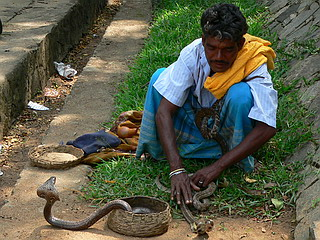
しかし聞く耳持ない峰岸徹。気がつけば袋の中から続々と戦闘体制のコブラが。
そして戦慄の一言…
「首に巻いてみっか？」
ひぇぇぇぇぇぇ〜